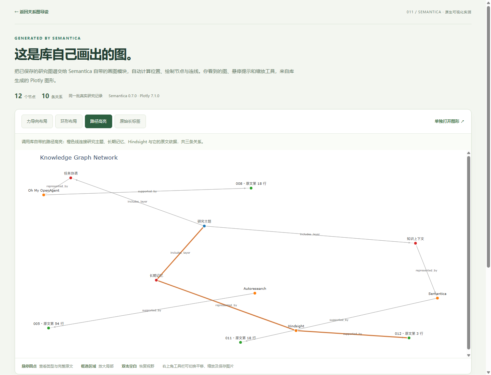
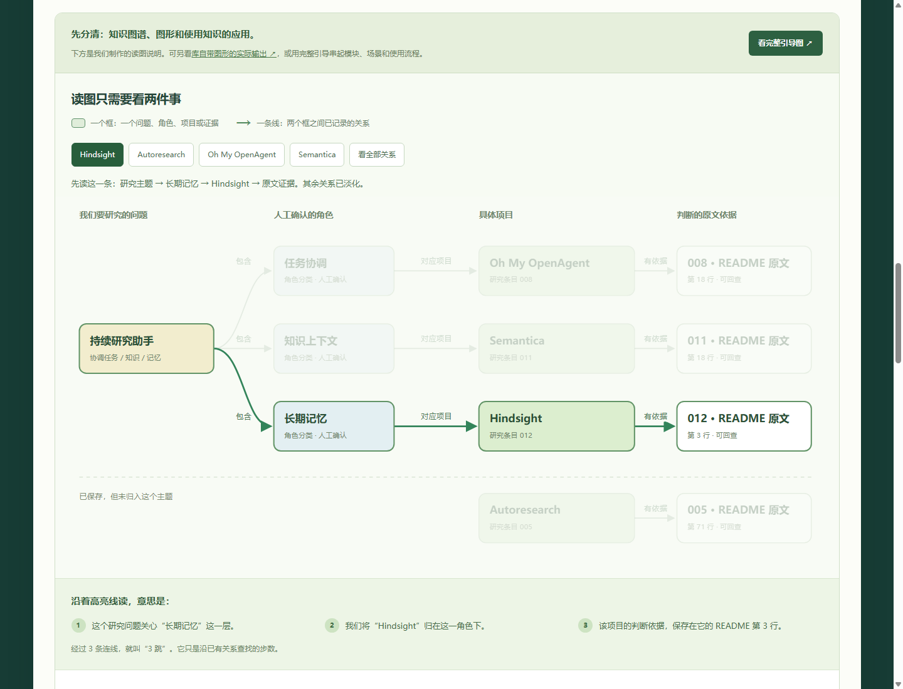

Obsidian 默认关系图
一个圆点主要是一篇笔记；一条线表示两篇笔记之间的内部链接。
Agent 研究笔记链接 →Hindsight 笔记
Obsidian 官方说明 ↗FROM DOCUMENTS TO REUSABLE KNOWLEDGE
Semantica 帮应用把分散资料组织成有关系、有来源、能查询的知识。图形让人看见结构；保存的知识还能用于搜索、研究简报和后续任务。
库能做什么 · 我们实际验证了什么 · 做成业务还需要补什么

01 / BUILD THE MENTAL MODEL
先分清“知识的结构”“画出来的图”和“使用这些知识的应用”，就不会把所有能力都归到一张图上。
一个圆点主要是一篇笔记；一条线表示两篇笔记之间的内部链接。
把“谁是什么、依据在哪”明确记录下来。连线带有含义，程序可以沿关系查询。
这条角色关系由我们人工确认，随后交给 Semantica 保存与查询。
节点、关系、属性、来源。关掉图形页面后，保存的数据仍可加载和使用。
库自带画图功能，能布局、缩放、悬停和高亮路径。换布局不会增加事实。
网页、问答、研究简报、Agent 工具。应用决定如何接入、复核和触发动作。
抽取负责从资料找出候选对象与关系；建图负责组织这些记录；画图负责显示已有结构。本例已经验证建图和画图，中文自动抽取还需要独立测试。
本例的建图、文件保存、关键词查询与画图都在本地完成，没有调用大模型，也不需要模型 API 密钥。自动抽取可选择规则、机器学习或 LLM；是否需要模型、联网和付费取决于所选方法。
当前关系由人核对后录入。未来可让抽取模块提出候选，但仍要检查原文依据和错漏。图谱保存了一个判断，不代表这个判断已经得到独立证明。
库原生图展示真实的自动布局、悬停和高亮效果。我们制作的说明图把同一批关系排成更容易读的流程，并加入逐句解释。完整引导图则用来说明整套能力和使用方式。
图中保存的关系能被查询。搜索界面、问答方式和业务动作需要应用接入；本例已实现关键词查询与简报模板，自动问答、任务系统和审批动作仍未连接。
COMPARE / OBSIDIAN × SEMANTICA
两者都涉及知识组织与关系图，但主要交付形态不同：Obsidian 是直接使用的知识管理应用，Semantica 提供搭建知识处理系统的组件。
都可以用“节点 + 连线”表达关联，沿连接查看相关内容。
数据怎样组织、谁来建立关系、如何检查质量，以及结果如何被人或程序使用。
| 比较维度 | Obsidian | Semantica |
|---|---|---|
| 产品定位 | 用于阅读、写作、整理和浏览知识的应用。 | 主要面向开发者，提供知识处理、查询与服务组件。 |
| 数据组织 | 围绕本地 Markdown 笔记、属性和内部链接；也可把一条事实单独写成笔记。 | 可把实体、关系、证据和决策分别组织成带属性的记录；持久化方式按需求选择。 |
| 关系从哪里来 | 常见方式是人写笔记、填属性、建立链接；自动化可通过插件或开发补充。 | 可接收已定义的关系，也提供规则、模型或 LLM 抽取组件；当前演示关系由人工确认。 |
| 资料处理 | 提供笔记编辑、属性管理；Bases 支持按文件与属性查看、排序和筛选。 | 提供接入、抽取、去重、冲突处理、约束与规则等模块，需要配置并验证具体效果。 |
| 图形的角色 | 默认图主要显示笔记之间的内部链接，也可按设置显示标签等对象。 | 把已构建的图谱可视化；节点、关系和查询结果也可独立交给程序使用。 |
| 常见工作方式 | 自己阅读与整理，保存成便于维护的笔记库；可按需要逐步扩展。 | 开发资料处理与查询流程，再接入网页、研究工具或 Agent；还要维护规则、质量和运行环境。 |
依据：Obsidian 关系图 · 属性 · Bases · Semantica 架构。这是产品与机制对照，尚未进行两者的效率或准确率对测。
表达关系：基本相同。图模型的共同抽象都是节点与边。
数据系统：不能直接等同。文件、属性、类型化关系和存储适配的组织方式有差异。
处理流程：会有实质差别。抽取、去重、冲突检查和规则处理涉及数据加工，需要实际配置与验证。
这些差异不是不可跨越的能力边界。Obsidian 可以扩展，Semantica 也需要应用接入；仅凭图形相似或模块数量，不能判断谁更适合你的任务。
我们已证明 Semantica 能保存、查询和显示这些关系；还没有证明它比 Obsidian 或直接搜索 README 更省时间。额外价值需要在新资料自动处理、质量检查、持续更新与应用调用中继续验证。
如果主要任务是自己阅读、写研究、记录来源和按属性筛选，Obsidian 是更直接的起点。
当需要批量处理多处资料、复用规则，并向网页或多个 Agent 提供知识时，再检验它能减少多少开发与维护工作。
可设计为：Obsidian 维护原文 → Semantica 读取确认版本并组织知识 → 网页或 Agent 查询。此方案尚未接通。
选择建议基于我们当前的 GitHub 项目研究任务。下一次对测应采用相同资料、相同问题，记录答案与证据正确性、操作耗时、开发投入和维护成本。
02 / THE COMPLETE JOURNEY
点击任意一步，看它的输入、处理和产物。切换视角，对照库的完整能力与我们的实际做法。
回到资料与关系复核，再更新图谱、检索和下游简报。知识库需要持续维护。
完整能力依据官方架构整理；六步是便于理解的分组，模块可以独立组合使用。
03 / WHAT IS INSIDE
先看中文职责，需要技术细节再展开。状态明确区分“库已经提供”与“我们已经验证”。
这是按工作职责整理的主要模块地图，未逐项罗列底层工具与全部 API。使用哪组模块，取决于你的资料、问题与交付目标。
04 / WHERE IT HELPS
共同点是：答案分散在多处，问题需要跨关系查找，且必须说明依据。这里列的是具体使用方式和验证状态。
05 / GET STARTED
先用小样本把输入、关系和依据核对清楚，再评估自动化和业务集成。下面三条路线分别对应体验、试点与扩展。
下面使用本项目验证的固定依赖，从仓库根目录执行。安装需要网络；Python 3.12 是本地已验证环境。
python -m pip install -r projects/011-semantica/requirements.txt
python projects/011-semantica/run_pilot.py
python projects/011-semantica/serve_pilot.py --port 8761本机打开 真实流程入口。本仓库已有环境时，可用 projects/011-semantica/.venv/Scripts/python.exe 替代 python。直接打开 HTML 可看快照；重建和实时查询需要本机服务。
输入：pilot-inputs.json · 处理：run_pilot.py · 原生画图：native_graph.py。这三个文件是我们的演示接入代码。
06 / WHAT ACTUALLY CAME OUT
本地实测版本为 Semantica 0.7.0。下面的数字描述这个小样本，不代表准确率或生产性能。

已验证 12 个节点、10 条关系与三条高亮连接。原始长标签容易拥挤，可对照短标签版。

同一批保存数据，用方框、逐句说明和原文帮助理解。这个外观由应用实现。
已经验证保存后重载；“记忆”找到 012；“任务协调”找到 008；项目名搜索也能找到主题之外的 005；沿图回查原文；按证据生成简报。
仍未验证中文自动抽取、语义问答、原生冲突与推理、外部数据库、规模性能，以及比直接读 README 节省多少时间。
07 / WHAT IT MEANS FOR US
你现在在持续收录编号项目、核对能力并制作网页。最值得试的是：把分散的研究判断和出处连起来，减少重复找资料的工作。
按“任务协调、知识上下文、长期记忆”等角色找条目，再看到对应依据。当前已验证这三项角色的小样本查询。
保留“结论由哪段资料支持”。来源变化时能要求复核，避免继续沿用旧依据；影响传播仍需扩展。
把已核对角色、原文和待验证事项交给下一项研究。本例已生成简报，后续 Agent 与任务系统接入仍待验证。
项目增多，跨项目问题反复出现；来源与结论需要长期维护；多个人或 Agent 需要共享同一套依据。是否节省时间，要通过对照试验判断。
资料量少、主要是个人阅读和全文检索，或只是想浏览笔记链接时，可以先保留现有笔记与搜索方式。图谱额外需要关系设计、复核和维护成本。
以上是结合本仓库工作方式作出的应用判断；当前尚未测出效率提升或成本下降。
08 / WHERE TO GO NEXT
先确认正确和有用，再增加自动化与系统规模。下面每一步都写明需要留下什么、怎样检查成效；它们是建议路线，尚未完成。
选择一批新的中文研究资料，先人工建立正确答案，再测试自动抽取、证据定位与查询。比较错漏、耗时和维护成本，决定哪些步骤值得自动化。
TAKE THE MAP WITH YOU
一张图汇总理解方式、工作流程、模块、场景、使用方法、实际效果、对你的意义与扩展路线。它是我们整理的说明图；库生成的原生关系图在效果页。
完整能力依据官方文档与本地安装包核对；主分支能力可能变化。本例实际运行固定为 Semantica 0.7.0、Plotly 7.1.0。画图成功不证明知识正确，关系查询也只反映已经记录的内容。
Semantica 原项目及文档归其团队与贡献者所有，采用 MIT 许可。引导图、文字说明与外层网页由本仓库制作；图形效果截图来自实际运行，底层可视化使用 Semantica / Plotly。没有使用第三方照片。完整研究与复现记录 ↗